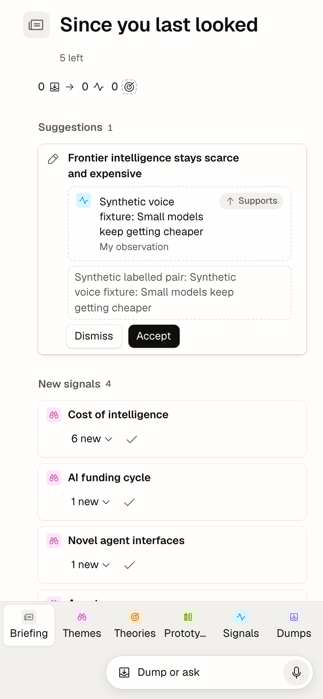
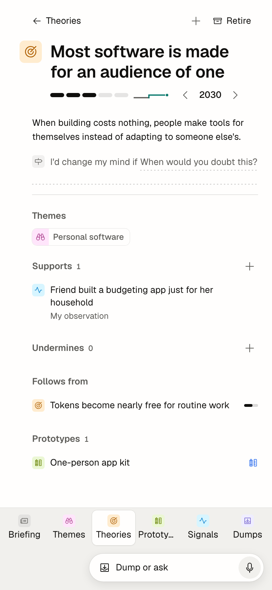
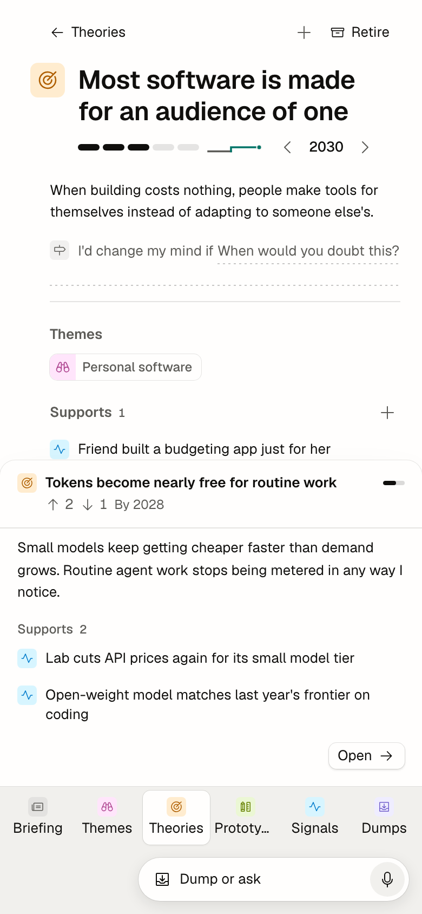
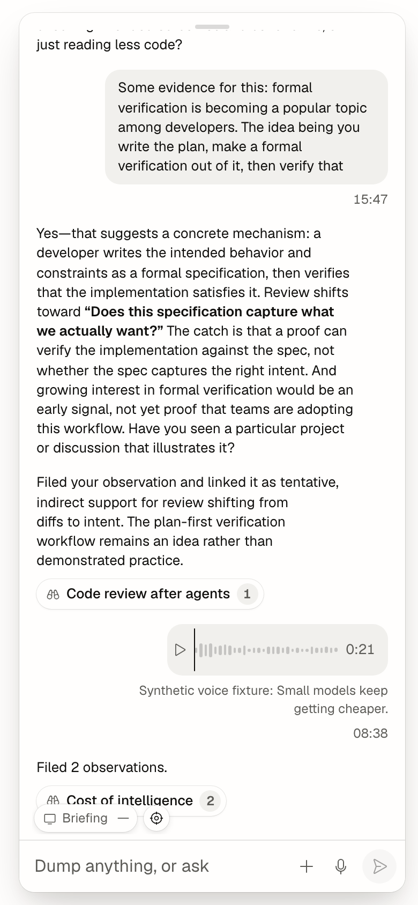
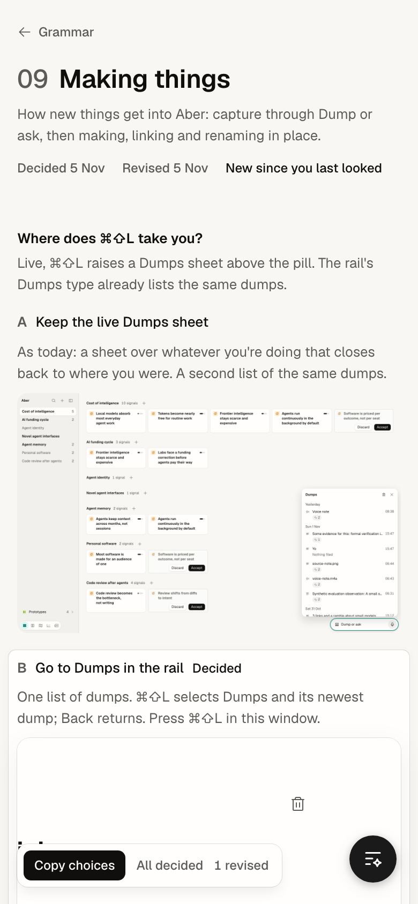

Recommended B. Theories and Signals already filter by theme, so Themes is the one list a phone can do without. Dumps keeps a tab because a dump from the Shortcut is what you check on a phone, and its Working spinner and failed-dump dot need a home.
Six items don't fit at 390 with their names whole (today the app truncates “Prototy…”). Five do. Each phone is live: tap a tab, then More.
Keeps the rail's order. Prototypes and Dumps go in More, so More carries the dump spinner and dot.
What you read and capture on a phone. Themes and Prototypes go in More.
Everything one tap away, as today. Labels get tight and “Prototypes” may truncate.
Recommended B. At 13 a phone reads like a shrunken desktop page, and fields must be 16 anyway or iOS zooms. One step up keeps four sizes and makes text and fields one size.
Both phones show the same challenged theory. Scroll, and tap a signal row to see a peek at each size.
One scale everywhere. Fields alone go to 16, so a field's text is bigger than the text around it.
Counts 12, labels 13, body and fields 16, the title 24. Section headers are 16 / 600, set apart by weight and their hairline.
Recommended A. Each needs width to mean anything: Columns is five lists side by side, Timeline is years across. A phone gets the type-first view; all three stay on a tablet (the 744 window below).
Each phone opens where its option puts the views. In B and C a tap on an object raises its pane as a bottom sheet.
More holds only types. No view switcher below 744.
The map is the one view touch suits: drag to pan, pinch to zoom, tap a pin.
Columns pages one column at a time, Atlas pans and pinches, Timeline scrolls sideways.
A phone and a 744 tablet, both live and both following your picks above. Play a flow, or use them with your finger. Open the phone app full screen on your phone to feel the real keyboard, safe areas and swipes.
visualViewport), and the grab handle or a drag down closes it. On a tablet the chat keeps 09's floating 360 column.(hover: hover); press feedback is :active.viewport-fit=cover; the bar pads env(safe-area-inset-top), the tab bar and sheets pad the bottom, and gutters grow to the side insets in landscape. Nothing tappable sits under the home indicator.| Where | What's there at 390 | Rule |
|---|---|---|
| App tabs | Six tabs, 62 × 50 each, 11 / 500 labels that truncate; the current one a raised white chip | 2 |
| App pill | Below the tab bar, which pads 64 for it: 118 of 844 at the bottom before the safe area | 9 |
| App full view | Tile at 28, prose at 46, title at 64; top padding 16, sides 20 | 6 |
| App touch | 19 of 25 visible controls under 44 high on Briefing; Dismiss and Accept are 28 | 12 |
| App peek | A bottom sheet up to 70%, above the tabs; no handle, no drag, no detents | 7 |
| App chat | A near full-height floating sheet with a grab handle; field 16 (good) | 9 |
| App modals | “State a theory” is a centred card at 12% from the top | 11 |
| App views | No view switcher below 720; Columns, Atlas and Timeline unreachable | Choice 3 |
| App Find | Only each list's field; nothing on Briefing | 3 |
| App breakpoint | 720; the grammar says 640 (05, 06, 07) | 1 |
| Jigs | nav 90%, 06 71%, 07 64%, 09 59%, 10 81%, 11 67% of text under 9px; 08 none | – |




